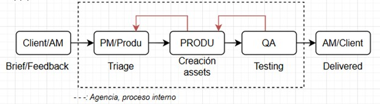
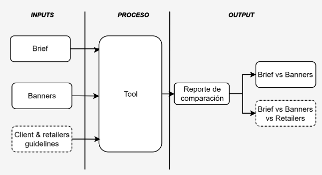
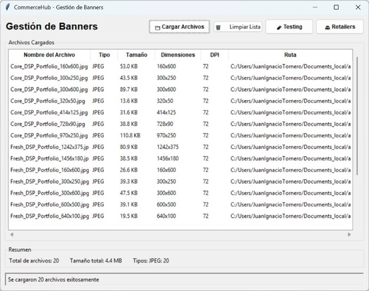
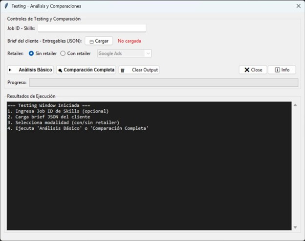
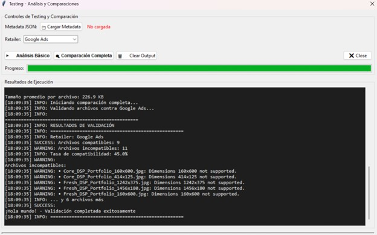

Contexto
Este caso se desarrolla en una cuenta de producción de banners digitales a gran escala, donde intervine realizando una auditoría integral del proceso operativo con el objetivo de identificar oportunidades de automatización.
El flujo implicaba la gestión del pedido, la producción y la validación de múltiples piezas por campaña, considerando simultáneamente especificaciones técnicas, lineamientos de marca y contenido variable.
El proceso se ejecutaba principalmente de forma manual, con alta dependencia del conocimiento individual y múltiples instancias de validación.
Problema
- Validaciones manuales repetitivas
- Alto consumo de tiempo operativo
- Dependencia del conocimiento individual
- Mayor margen de error
- Dificultad para escalar
- Falta de trazabilidad
Enfoque
El abordaje se centró en comprender el proceso completo antes de automatizar:
- Análisis del flujo end-to-end
- Identificación de inputs y outputs
- Detección de cuellos de botella
- Separación entre datos estandarizados y variables
Proceso
Flujo general:
- Cliente → Producción → QA → Entrega

Se identificaron puntos clave de automatización a lo largo del flujo, incluyendo la gestión del pedido y los entregables, la validación en sus distintas instancias y la generación de reportes. Se utilizó IA para el reordenamiento y la validación de la documentación, así como para el análisis de contenido de los entregables. En paralelo, se incorporó automatización para la creación de artefactos (reportes) y la validación de metadata de banners mediante reglas de comparación.
Solución
Herramienta de automatización
Se diseñó una herramienta para validar automáticamente especificaciones técnicas y contenido.
- Inputs: brief + assets
- Proceso: comparación automática
- Outputs: reportes de validación

Arquitectura simplificada del flujo de validación: inputs, procesamiento y generación de reportes.
Línea punteada: inputs opcionales para validación extendida.
Principios de diseño
- Intuitiva
- Escalable
- Integrable
- Precisa
Automatización aplicada
- Validación de metadata
- Naming conventions
- Comparación contra specs
- Generación de reportes
Resultados
| Métrica | Antes | Después |
|---|---|---|
| Tiempo por asset | 5–10 min | <1 min |
| Tiempo por campaña | 1–2 h | 10–20 min |
| Error rate | Medio/Alto | Bajo |
| Escalabilidad | Lineal | No lineal |
Ejemplos

Interfaz panel principal de la tool.

Interfaz DE TESTING.

Resultados ejecución testing automatizado.
Criterios de diseño y decisiones técnicas
- La automatización se define a partir del entendimiento completo del proceso, no al revés
- La estandarización de datos es un requisito previo para escalar
- El mayor impacto se obtiene optimizando el flujo, no solo las tareas individuales
- La automatización permite liberar tiempo operativo y enfocarlo en tareas de mayor valor
- El uso de IA se evalúa según el tipo de problema:
-> útil en procesamiento de información no estructurada (ej: documentación, contenido)
-> no recomendable en validaciones críticas, donde se priorizan reglas determinísticas
Cierre
Este enfoque es aplicable a cualquier proceso que maneje alto volumen de validaciones y requiera consistencia, trazabilidad y escalabilidad.